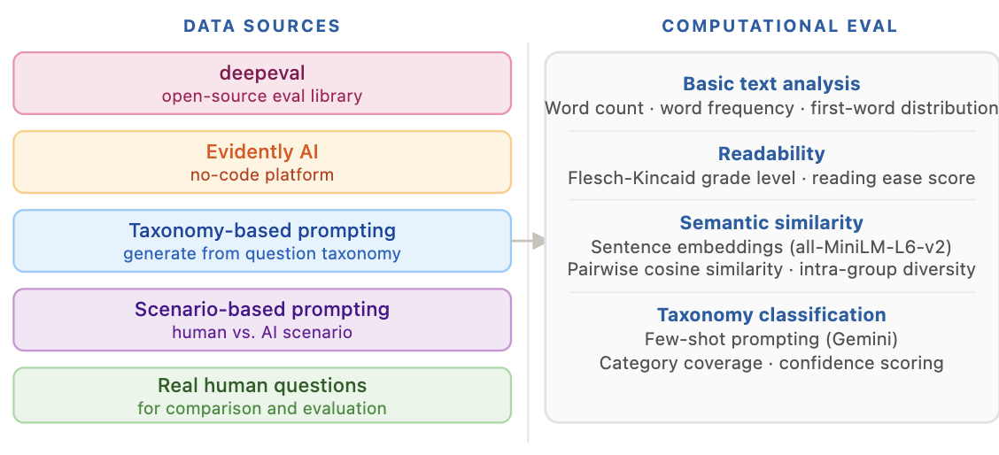
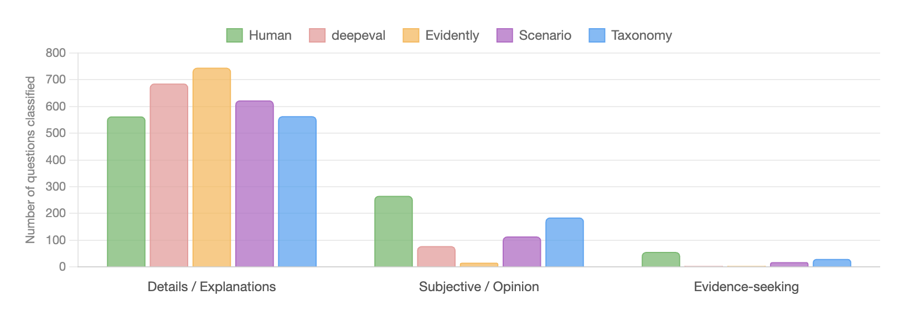

Generic synthetic data generation techniques may not faithfully reproduce how users actually behave. HCI research findings allow us to steer model outputs with real, observed behavior, leading to evals that actually stress-test AI for real-world use.
Question-answering systems are increasingly used to scale interactions in online spaces; however, designing and evaluating them requires knowing the range of questions users actually ask, and which ones AI should handle versus humans. When real data is scarce or insufficient, synthetic data can fill the gap — but only if it reflects how people actually ask questions in that context.
I use question-answering contexts as a demonstrative example. HCI research has produced detailed taxonomies of real user questions across online communities and other settings, and I use those taxonomies to both evaluate synthetic data as well as to generate synthetic data more grounded in observed behavior.
Specifically, I leverage Hoque et al.'s (ref) work on news-based QA chatbots which includes a taxonomy of questions news readers ask post reading a news article and a dataset of the specific questions they had.
I tested data from the open source eval library - deepeval and a no-code AI eval tool - evidently. Additionally, synthetic data was generated using a taxonomy-based approach (provide the taxonomy in the prompt) and a scenario-based approach (what questions would news readers would have if a human vs an AI was providing answers?)


A concrete look at one article — a measles outbreak spreading across NYC-area communities. Real reader questions stay fixed on the left; switch the tabs on the right to see what each approach generated from the same article.
Varied in tone and type — factual, critical, and opinion-seeking. The benchmark every synthetic approach is measured against.
Fact-retrieval with formal phrasing — plausible on the surface, but feels generated rather than asked by a real reader.
Readable and relevant, but almost exclusively fact-retrieval — low diversity across question types.
Framing the recipient (human vs. AI) yields more varied, natural-sounding questions than off-the-shelf tools.
Closest to real human questions in diversity and tone — spans factual, opinion-seeking, and evidence-seeking types.
Running a LLM-as-a-judge pipeline to evaluate quality of synthetic questions and their human-likeness